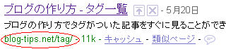

ブログ比較のおすすめ情報です。
実際に作成した無料ブログもいくつかあります。
独自ドメイン対応やアフィリエイトが自由なもの、htmlの編集が可能なものなどいろいろです。
中小規模の場合は途中で運営中止になことが多いため、大手の専門ブログサービスを利用することをおすすめします。
ブログ比較の一覧の続き
ブログの作り方や Seesaa のカスタマイズ情報を更新してます。そのほかホームページ作り方なども。
ブログ比較のおすすめ情報です。
実際に作成した無料ブログもいくつかあります。
独自ドメイン対応やアフィリエイトが自由なもの、htmlの編集が可能なものなどいろいろです。
中小規模の場合は途中で運営中止になことが多いため、大手の専門ブログサービスを利用することをおすすめします。
ブログ比較の一覧の続き
ブログに広告を掲載して収入を得る方法は「アフィリエイト」と呼ばれてます。
主婦の方からビジネスマンの副業など、お小遣い稼ぎとして人気です。
ブログやホームページ上で広告主の商品やサービスをご紹介し、商品の購入や資料請求など何らかの成果があった場合に広告収入を得ることができます。
ブログ広告での収入の続き
Seesaaブログのタグページで、一覧ページの/tag/っていうのがあったんですが、どうも最近なくなってしまったようです。

ひそかに、ブログカスタマイズしてたんですが、せっかく作ったのになくなってしまったようでして…。
このタグページはもうしょうがないですけど、これを機にレンタルサーバーに引っ越そうかなと考えています。
Seesaa blog でのパンくずリストの作り方ですが、ウェブ標準な作り方がわからなかったんで W3C をのぞいてきました。
W3C ではこんな感じで作られているようです。

どうやらパンくずリストごと h1 タイトルでくくっているようなんですが、どういった作り方がSEO対策的に一番いいのかっていうのをパンくずリスト比較しようと思います。
ちなみに、パンくずリストっていうのは、ブログ訪問者さまが迷わないようにするためのナビゲーションリンクのことです。
ヘンゼルとグレーテルみたいに、森で迷っても大丈夫なように、パンくずを残して道しるべにするものです。
パンくずリストの作り方の続き
費用対効果の高いブログへの集客方法にもいろいろありますが、低コストなお客様集めの方法にはどのようなものがあるのでしょうか。
ネット上での集客方法としては、ブログアフィリエイトや検索連動型のクリック単価広告が有名で効果が高いようです。
ブログの集客方法の続き独自ドメインを取得してブログを作成する場合、新規に取得する場合はドメイン年齢や被リンクなど、まったくのゼロからのスタートになります。
けれども、中古ドメインを利用すると、それまでの経歴を引き継ぎながら作り始めることができます。
中古ドメインというのは、所有者が更新しなかったドメインを再取得するものですが、毎日、世界中で数十万単位のドメインが期限切れを迎えています。
それら中古ドメインのなかでも、1990年代後半から取得されていたものは、オールドドメインと呼ばれています。
ブログロゴやバナー画像を作成する際の無料ツールはいろいろありますが、今回は GIMP という無料ツールを使って、タイトルバナーを作ってみました。
結論からいうと、できばえはこんな感じなんです。

GIMP には画像を加工するいろいろな機能がついているようなんで、使い慣れてくると、もっとかっこいいブログロゴも作成できるのではないかなと思います。
ブログロゴ作成の無料ツールの続き